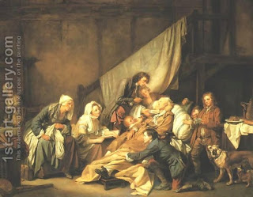

Sotah 49 - Losses
After the Temple was destroyed, people of faith disappeared, and only people of small faith remained. And who are these? - Those that have what to eat for today, and they worry about tomorrow. Honesty, real learning and filial piety was gone. One whom are we to rely? Only on God.
When Rabbi Chanina ben Dosa died, there were no more people of good deeds, and after Rabbi Akiva there were no more supporters of Torah, and the wells of wisdom were closed.
After Rabbi Yehudah the Prince died, there was no more humility and fear of sin. However, Rav Yosef, when this teaching was recited in his academy, corrected the students and told them that there was real humility still, because he was there. Similarly, Rav Nachman said to take out "no fear of sin" since he was yet alive.
Art: Filial Piety by Jean Baptiste Greuze